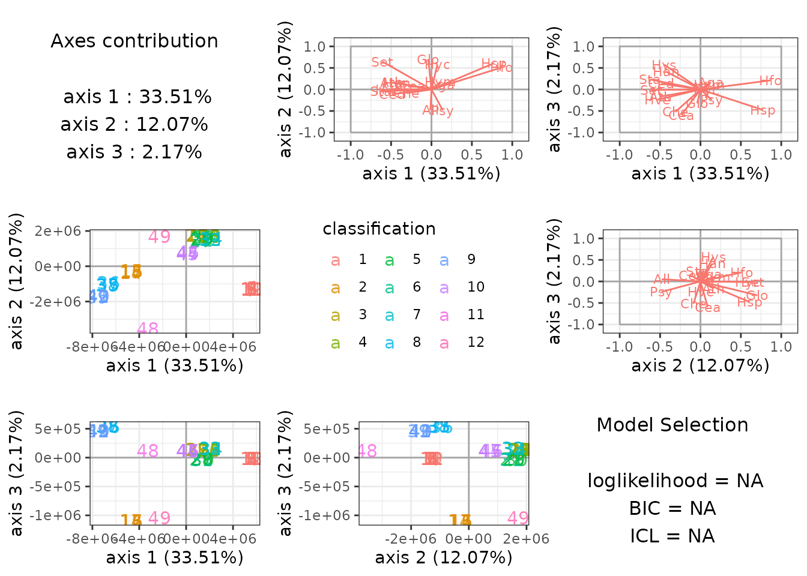

Supervized classification of multivariate count table with the Poisson discriminant Analysis
PLN team
2025-03-10
Source:vignettes/PLNLDA.Rmd
PLNLDA.RmdPreliminaries
This vignette illustrates the standard use of the PLNLDA
function and the methods accompanying the R6 Classes PLNLDA
and PLNLDAfit.
Requirements
The packages required for the analysis are PLNmodels plus some others for data manipulation and representation:
Data set
We illustrate our point with the trichoptera data set, a full description of which can be found in the corresponding vignette. Data preparation is also detailed in the specific vignette.
data(trichoptera)
trichoptera <- prepare_data(trichoptera$Abundance, trichoptera$Covariate)The trichoptera data frame stores a matrix of counts
(trichoptera$Abundance), a matrix of offsets
(trichoptera$Offset) and some vectors of covariates
(trichoptera$Wind, trichoptera$Temperature,
etc.) In the following, we’re particularly interested in the
trichoptera$Group discrete covariate which
corresponds to disjoint time spans during which the catching took place.
The correspondence between group label and time spans is:
| Label | Number.of.Consecutive.Nights | Date |
|---|---|---|
| 1 | 12 | June 59 |
| 2 | 5 | June 59 |
| 3 | 5 | June 59 |
| 4 | 4 | June 59 |
| 5 | 4 | July 59 |
| 6 | 1 | June 59 |
| 7 | 3 | June 60 |
| 8 | 4 | June 60 |
| 9 | 5 | June 60 |
| 10 | 4 | June 60 |
| 11 | 1 | June 60 |
| 12 | 1 | July 60 |
Mathematical background
In the vein of Fisher (1936) and Rao (1948), we introduce a multi-class LDA model for multivariate count data which is a variant of the Poisson Lognormal model of Aitchison and Ho (1989) (see the PLN vignette as a reminder). Indeed, it can viewed as a PLN model with a discrete group structure in the latent Gaussian space.
This PLN-LDA model can be written in a hierarchical framework where a sample of -dimensional observation vectors is related to some -dimensional vectors of latent variables and a discrete structure with groups in the following way: where denotes the group sample belongs to.
The different parameters corresponds to the group-specific main effects and the variance matrix is shared among groups. An equivalent way of writing this model is the following: where, with a slight abuse of notation, is a group-indicator vector of length () and is a matrix collecting the group-specific main effects.
Covariates and offsets
Just like PLN, PLN-LDA generalizes to a formulation close to a multivariate generalized linear model where the main effect is due to a linear combination of the discrete group structure, covariates and a vector of offsets in sample . The latent layer then reads where is a matrix of regression parameters.
Prediction
Given:
- a new observation with associated offset and covariates
- a model with estimated parameters , , and group counts
We can predict the observation’s group using Bayes rule as follows: for , compute where is the density function of a PLN distribution with parameters . and are respectively plug-in estimates of (i) the probability of observing counts in a sample from group and (ii) the probability that a sample originates from group .
The posterior probability that observation belongs to group and most likely group can thus be defined as
Optimization by Variational inference
Classification and prediction are the main objectives in (PLN-)LDA. To reach this goal, we first need to estimate the model parameters. Inference in PLN-LDA focuses on the group-specific main effects , the regression parameters and the covariance matrix . Technically speaking, we can treat as a discrete covariate and estimate using the same strategy as for the standard PLN model. Briefly, we adopt a variational strategy to approximate the log-likelihood function and optimize the consecutive variational surrogate of the log-likelihood with a gradient-ascent-based approach. To this end, we rely on the CCSA algorithm of Svanberg (2002) implemented in the C++ library (Johnson 2011), which we link to the package.
Analysis of trichoptera data with a PLN-LDA model
In the package, the PLN-LDA model is adjusted with the function
PLNLDA, which we review in this section. This function
adjusts the model and stores it in a object of class
PLNLDAfit which inherits from the class
PLNfit, so we strongly recommend the reader to be somehow
comfortable with PLN and PLNfit before using
PLNLDA (see the PLN vignette).
A model with main effects and no covariates
We start by adjusting the above model to the Trichoptera data set. We
use Group, the catching time spans, as a discrete structure
and use log as an offset to capture differences in sampling luck.
The model can be fitted with the function PLNLDA as
follows:
##
## Performing discriminant Analysis...
## DONE!Note that PLNLDA uses the standard formula
interface, like every other model in the PLNmodels
package.
Structure of PLNLDAfit
The myLDA_nocov variable is an R6 object
with class PLNLDAfit, which comes with a couple of methods.
The most basic is the show/print method, which sends a
brief summary of the estimation process and available methods:
myLDA_nocov## Linear Discriminant Analysis for Poisson Lognormal distribution
## ==================================================================
## nb_param loglik BIC ICL
## 357 -799.746 -1494.436 -1047.782
## ==================================================================
## * Useful fields
## $model_par, $latent, $latent_pos, $var_par, $optim_par
## $loglik, $BIC, $ICL, $loglik_vec, $nb_param, $criteria
## * Useful S3 methods
## print(), coef(), sigma(), vcov(), fitted()
## predict(), predict_cond(), standard_error()
## * Additional fields for LDA
## $percent_var, $corr_map, $scores, $group_means
## * Additional S3 methods for LDA
## plot.PLNLDAfit(), predict.PLNLDAfit()Comprehensive information about PLNLDAfit is available
via ?PLNLDAfit.
Specific fields
The user can easily access several fields of the
PLNLDAfit object using S3 methods, the most
interesting ones are
- the covariance matrix :
- the regression coefficient matrix
(in this case
NULLas there are no covariates)
coef(myLDA_nocov)## NULL- the matrix of group means
| grouping1 | grouping2 | grouping3 | grouping4 | grouping5 | grouping6 | grouping7 | grouping8 | grouping9 | grouping10 | grouping11 | grouping12 |
|---|---|---|---|---|---|---|---|---|---|---|---|
| -26.81 | -6.82 | -26.37 | -25.20 | -28.15 | -28.73 | -27.04 | -26.19 | -26.26 | -5.64 | -3.46 | -25.19 |
| -26.79 | -27.53 | -5.66 | -25.18 | -7.44 | -28.71 | -27.02 | -26.17 | -26.24 | -26.31 | -24.15 | -4.47 |
| -2.38 | -3.96 | -2.36 | -2.92 | -6.51 | -5.54 | -2.69 | -2.03 | -2.71 | -2.65 | -24.26 | -3.85 |
| -26.81 | -27.56 | -5.69 | -4.52 | -28.09 | -28.78 | -27.06 | -5.51 | -5.59 | -4.91 | -24.21 | -25.23 |
| -0.28 | -0.26 | -0.62 | -1.09 | -0.61 | -0.11 | -0.66 | -0.80 | -0.39 | -0.45 | -0.61 | -1.16 |
| -4.00 | -3.32 | -2.93 | -4.47 | -6.72 | -8.00 | -2.85 | -3.06 | -5.53 | -3.99 | -24.13 | -25.15 |
The PLNLDAfit class also benefits from two important
methods: plot and predict.
plot method
The plot methods provides easy to interpret graphics
which reveals here that the groups are well separated:
plot(myLDA_nocov)
By default, plot shows the first 3 axis of the LDA when
there are 4 or more groups and uses special representations for the edge
cases of 3 or less groups.
ggplot2-savvy users who want to make their own
representations can extracts the
matrix of sample scores from the PLNLDAfit object …
| LD1 | LD2 | LD3 | LD4 | LD5 | LD6 | LD7 | LD8 | LD9 | LD10 | LD11 |
|---|---|---|---|---|---|---|---|---|---|---|
| 5572851 | -1314725 | -13445.07 | 108475.9 | -32807.19 | 13932.96 | 2222.78 | -1121.16 | 127.57 | 63.41 | -162.06 |
| 5577052 | -1309516 | -13663.61 | 109043.8 | -32620.18 | 13944.36 | 2245.39 | -1159.62 | 122.38 | 65.72 | -163.25 |
| 5615995 | -1262057 | -16024.20 | 112918.3 | -31001.54 | 13645.60 | 1928.42 | -1149.70 | 157.40 | 70.11 | -156.01 |
| 5659650 | -1208386 | -18638.87 | 117093.7 | -29209.81 | 13210.21 | 1415.06 | -1006.97 | 207.65 | 71.59 | -146.86 |
| 5634198 | -1239487 | -17081.41 | 114602.3 | -30272.75 | 13417.37 | 1648.60 | -1028.38 | 182.73 | 69.74 | -151.75 |
| 5602064 | -1278862 | -15153.85 | 111489.5 | -31589.74 | 13712.83 | 1980.78 | -1101.02 | 149.14 | 67.21 | -158.22 |
…or the matrix of correlations between scores and (latent) variables
| LD1 | LD2 | LD3 | LD4 | LD5 | LD6 | LD7 | LD8 | LD9 | LD10 | LD11 | |
|---|---|---|---|---|---|---|---|---|---|---|---|
| Che | -0.31 | -0.09 | -0.52 | -0.25 | 0.63 | -0.26 | 0.27 | -0.41 | 0.85 | -0.47 | 0.02 |
| Hyc | 0.07 | 0.58 | -0.01 | -0.39 | 0.00 | -0.56 | -0.76 | 0.75 | -0.08 | -0.24 | 0.57 |
| Hym | 0.11 | 0.18 | 0.11 | 0.74 | -0.27 | -0.08 | 0.37 | 0.23 | -0.35 | 0.05 | -0.60 |
| Hys | -0.45 | 0.16 | 0.58 | 0.02 | -0.21 | -0.36 | 0.45 | 0.25 | -0.32 | -0.06 | 0.25 |
| Psy | 0.14 | -0.48 | -0.24 | 0.28 | 0.39 | 0.26 | 0.09 | -0.03 | 0.48 | -0.55 | -0.38 |
| Aga | 0.13 | 0.11 | 0.17 | 0.88 | -0.03 | -0.16 | 0.26 | -0.06 | -0.13 | -0.17 | -0.52 |
predict method
The predict method has a slightly different behavior
than its siblings in other models of the PLNmodels. The
goal of predict is to predict the discrete class based on
observed species counts (rather than predicting counts from
known covariates).
By default, the predict use the argument
type = "posterior" to output the matrix of log-posterior
probabilities
predicted.class <- predict(myLDA_nocov, newdata = trichoptera)
## equivalent to
## predicted.class <- predict(myLDA_nocov, newdata = trichoptera, type = "posterior")
predicted.class %>% head() %>% knitr::kable(digits = 2)| 1 | 2 | 3 | 4 | 5 | 6 | 7 | 8 | 9 | 10 | 11 | 12 |
|---|---|---|---|---|---|---|---|---|---|---|---|
| -17.45 | -46.31 | -43.36 | -25.48 | -54.51 | -32.75 | -25.92 | -86.97 | -84.04 | -20.60 | -206.17 | -74.51 |
| -9.67 | -17.04 | -59.59 | -21.33 | -71.84 | -27.30 | -14.69 | -15.58 | -15.21 | -14.70 | -121.03 | -66.07 |
| -12.94 | -22.57 | -114.44 | -39.98 | -119.29 | -30.79 | -22.53 | -49.90 | -44.31 | -22.94 | -148.03 | -119.90 |
| -18.43 | -31.01 | -121.46 | -116.12 | -143.58 | -54.04 | -41.91 | -114.00 | -102.71 | -44.65 | -311.44 | -226.39 |
| -13.84 | -20.00 | -52.55 | -60.96 | -72.50 | -38.18 | -26.89 | -51.63 | -45.10 | -25.88 | -195.26 | -115.17 |
| -9.25 | -13.48 | -37.05 | -24.40 | -48.01 | -23.74 | -14.61 | -15.91 | -15.30 | -14.32 | -100.40 | -67.41 |
You can also show them in the standard (and human-friendly)
scale with scale = "prob" to get the matrix
predicted.class <- predict(myLDA_nocov, newdata = trichoptera, scale = "prob")
predicted.class %>% head() %>% knitr::kable(digits = 3)| 1 | 2 | 3 | 4 | 5 | 6 | 7 | 8 | 9 | 10 | 11 | 12 |
|---|---|---|---|---|---|---|---|---|---|---|---|
| 0.958 | 0.000 | 0 | 0 | 0 | 0 | 0.000 | 0.000 | 0.000 | 0.041 | 0 | 0 |
| 0.980 | 0.001 | 0 | 0 | 0 | 0 | 0.006 | 0.003 | 0.004 | 0.006 | 0 | 0 |
| 1.000 | 0.000 | 0 | 0 | 0 | 0 | 0.000 | 0.000 | 0.000 | 0.000 | 0 | 0 |
| 1.000 | 0.000 | 0 | 0 | 0 | 0 | 0.000 | 0.000 | 0.000 | 0.000 | 0 | 0 |
| 0.998 | 0.002 | 0 | 0 | 0 | 0 | 0.000 | 0.000 | 0.000 | 0.000 | 0 | 0 |
| 0.972 | 0.014 | 0 | 0 | 0 | 0 | 0.005 | 0.001 | 0.002 | 0.006 | 0 | 0 |
Setting type = "response", we can predict the most
likely group
instead:
predicted.class <- predict(myLDA_nocov, newdata = trichoptera, type = "response")
predicted.class## 1 2 3 4 5 6 7 8 9 10 11 12 13 14 15 16 17 18 19 20 21 22 23 24 25 26
## 1 1 1 1 1 1 9 2 1 1 1 1 2 3 2 2 2 3 3 3 9 3 4 1 4 4
## 27 28 29 30 31 32 33 34 35 36 37 38 39 40 41 42 43 44 45 46 47 48 49
## 12 5 4 5 6 7 7 7 8 8 8 8 8 1 9 9 9 10 10 10 10 11 12
## Levels: 1 2 3 4 5 6 7 8 9 10 11 12We can assess that the predictions are quite similar to the real group (this is not a proper validation of the method as we used data set for both model fitting and prediction and are thus at risk of overfitting).
## true
## predicted 1 2 3 4 5 6 7 8 9 10 11 12
## 1 10 0 0 1 0 0 0 0 1 0 0 0
## 2 1 4 0 0 0 0 0 0 0 0 0 0
## 3 0 1 4 0 0 0 0 0 0 0 0 0
## 4 0 0 0 3 1 0 0 0 0 0 0 0
## 5 0 0 0 0 2 0 0 0 0 0 0 0
## 6 0 0 0 0 0 1 0 0 0 0 0 0
## 7 0 0 0 0 0 0 3 0 0 0 0 0
## 8 0 0 0 0 0 0 0 4 1 0 0 0
## 9 1 0 1 0 0 0 0 0 3 0 0 0
## 10 0 0 0 0 0 0 0 0 0 4 0 0
## 11 0 0 0 0 0 0 0 0 0 0 1 0
## 12 0 0 0 0 1 0 0 0 0 0 0 1Finally, we can get the coordinates of the new data on the same graph
at the original ones with type = "scores". This is done by
averaging the latent positions
(found when the sample is assumed to come from group
)
and weighting them with the
.
Some samples, have compositions that put them very far from their group
mean.
library(ggplot2)
predicted.scores <- predict(myLDA_nocov, newdata = trichoptera, type = "scores")
colnames(predicted.scores) <- paste0("Axis.", 1:ncol(predicted.scores))
predicted.scores <- as.data.frame(predicted.scores)
predicted.scores$group <- trichoptera$Group
plot(myLDA_nocov, map = "individual", nb_axes = 2, plot = FALSE) +
geom_point(data = predicted.scores,
aes(x = Axis.1, y = Axis.2, color = group, label = NULL))
A model with latent main effects and meteorological covariates
It is possible to correct for other covariates before finding the LDA
axes that best separate well the groups. In our case ,we’re going to use
Wind as a covariate and illustrate the main differences
with before :
myLDA_cov <- PLNLDA(Abundance ~ Wind + 0 + offset(log(Offset)),
grouping = Group,
data = trichoptera)##
## Performing discriminant Analysis...
## DONE!Specific fields
All fields of our new PLNLDA fit can be accessed as
before with similar results. The only important difference is the result
of coef: since we included a covariate in the model,
coef now returns a 1-column matrix for
instead of NULL
| Wind | |
|---|---|
| Che | -0.3292299 |
| Hyc | 1.3723327 |
| Hym | -0.1927340 |
| Hys | -0.4544647 |
| Psy | 0.0372515 |
| Aga | -0.0611397 |
The group-specific main effects can still be accessed with
$group_means
| grouping1 | grouping2 | grouping3 | grouping4 | grouping5 | grouping6 | grouping7 | grouping8 | grouping9 | grouping10 | grouping11 | grouping12 |
|---|---|---|---|---|---|---|---|---|---|---|---|
| -22.67 | -11.35 | -27.03 | -21.43 | -28.73 | -48.57 | -33.33 | -31.56 | -21.58 | 5.81 | 13.54 | -26.85 |
| -26.24 | -46.86 | -0.70 | -19.10 | -9.80 | -52.78 | -36.62 | -33.33 | -17.65 | -20.07 | -8.47 | 2.34 |
| -1.00 | -4.50 | -1.66 | -1.61 | -5.73 | -7.08 | -2.65 | -1.81 | -1.37 | -1.37 | -29.03 | -3.22 |
| -27.64 | -36.74 | -2.49 | 0.95 | -30.64 | -42.33 | -33.58 | -4.99 | 0.32 | 0.91 | -22.10 | -29.30 |
| -0.05 | -0.43 | -0.47 | -0.85 | -0.44 | -0.43 | -0.59 | -0.71 | -0.06 | -0.15 | -0.19 | -1.03 |
| -1.64 | -4.18 | -1.61 | -2.23 | -5.41 | -10.74 | -2.70 | -2.71 | -3.11 | -1.56 | -27.37 | -30.89 |
plot method
Once again, the plot method is very useful to get a
quick look at the results.
plot(myLDA_cov)
predict method
We can again predict the most likely group for each sample :
predicted.class_cov <- predict(myLDA_cov, newdata = trichoptera, type = "response")and check that we recover the correct class in most cases (again, we used the same data set for model fitting and group prediction only for ease of exposition):
## true
## predicted 1 2 3 4 5 6 7 8 9 10 11 12
## 1 11 0 0 1 0 0 0 0 1 0 0 0
## 2 1 4 0 0 0 0 0 0 0 0 0 0
## 3 0 1 4 0 0 0 0 0 0 0 0 0
## 4 0 0 0 3 1 0 0 0 0 0 0 0
## 5 0 0 0 0 2 0 0 0 0 0 0 0
## 6 0 0 0 0 0 1 0 0 0 0 0 0
## 7 0 0 0 0 0 0 3 0 0 0 0 0
## 8 0 0 0 0 0 0 0 4 1 0 0 0
## 9 0 0 1 0 0 0 0 0 3 0 0 0
## 10 0 0 0 0 0 0 0 0 0 4 0 0
## 11 0 0 0 0 0 0 0 0 0 0 1 0
## 12 0 0 0 0 1 0 0 0 0 0 0 1